プロジェクト管理者機能#
プロジェクト管理者は、特定のプロジェクトに対する管理権限を付与されたユーザーです。プロジェクト管理者は、システム全体のスーパー管理者権限を必要とせずに、自分が管理するプロジェクトに所属するユーザーを確認したり、コンピュートセッションやモデルデプロイメントを監視したり、ストレージフォルダを運用したりできます。
プロジェクト管理者権限のあるプロジェクトの識別#
ヘッダーのプロジェクトドロップダウンを開くと、プロジェクト管理者ロールを持つプロジェクトには名前の横に盾の形のバッジが表示されます。バッジにカーソルを合わせると プロジェクト管理者 ツールチップが表示され、このプロジェクトを選択すると以下で説明するプロジェクト管理者向けサイドバー項目が表示されることが確認できます。
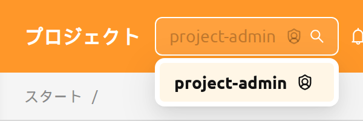
ヘッダーのプロジェクトセレクターで別のプロジェクトに切り替えると、ユーザーのロールが再評価されます。同じユーザーが同一のログインセッション内で、あるプロジェクトではプロジェクト管理者として、別のプロジェクトでは一般ユーザーとして振る舞うことがあります。プロジェクト管理者ロールの付与と取り消しの方法については、RBAC管理章のプロジェクト管理者権限の付与セクションを参照してください。
プロジェクト管理者権限は選択したプロジェクトごとに再評価されるため、利用できるページはプロジェクトによって異なる場合があります。権限のないURLを開いたり、権限のないプロジェクトを選択したりすると、不正アクセスページが表示され、最初に利用できるページに戻るボタンが併せて提供されます。
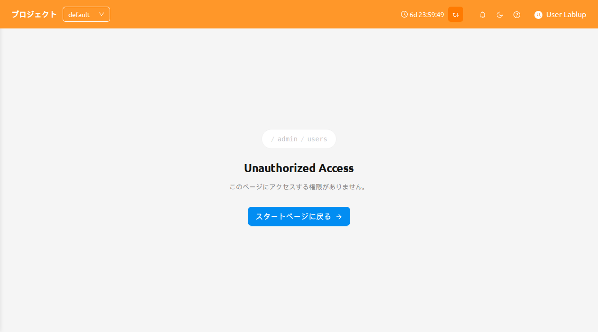
プロジェクト管理者を設定#
スーパー管理者は、プロジェクト管理者ページ（ユーザー → プロジェクト）から起動するプロジェクト管理者を設定モーダルを通じて、1か所で1人以上のユーザーにプロジェクト管理者権限を付与・取り消しできます。
各プロジェクト行でプロジェクト管理者を設定ボタンをクリックしてモーダルを開きます。
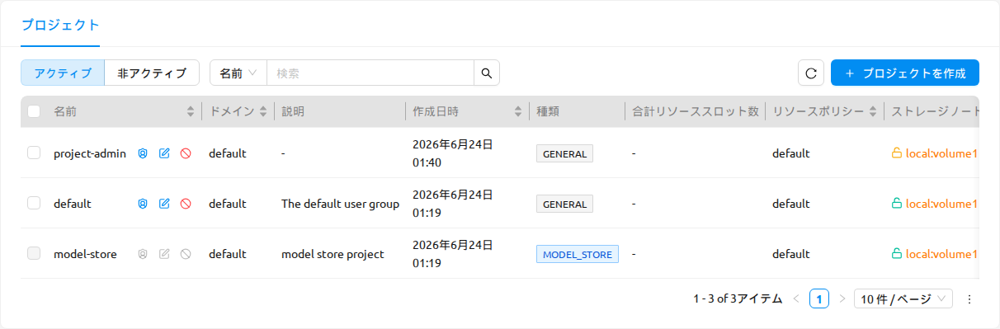
プロジェクト管理者を設定アクションは、マネージャー26.8.0以降のスーパー管理者が利用できます。それより古いマネージャーでは表示されず、モデルストアプロジェクトでは無効になります。
このモーダルは以下を提供します:
- ユーザー選択と追加: 1人以上のユーザーを選択する複数選択と、現在のプロジェクトに対するプロジェクト管理者権限を付与する追加ボタンです。
- 現在の管理者テーブル: プロジェクトの現在の管理者の一覧で、各項目にはそのユーザーのプロジェクト管理者権限を削除する管理者権限を無効化（X）アクションがあります。
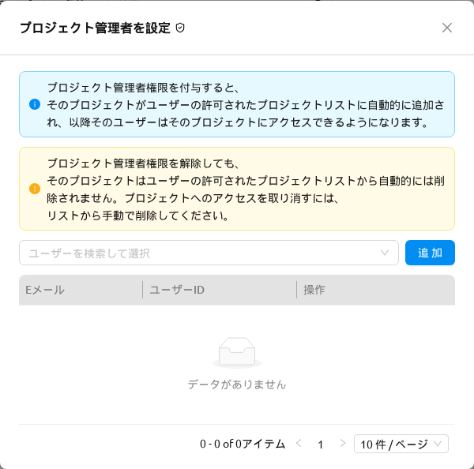
このモーダルには、割り当てまたは取り消しの前に読むべき2つのアラートが表示されます:
- 情報: プロジェクト管理者権限を付与すると、そのプロジェクトがユーザーの許可されたプロジェクトリストに自動的に追加され、以降そのユーザーはそのプロジェクトにアクセスできるようになります。
- 警告: プロジェクト管理者権限を取り消しても、そのプロジェクトはユーザーの許可されたプロジェクトリストから自動的には削除されません。プロジェクトへのアクセスをブロックするには、リストから手動で削除してください。
モーダルタイトルの横にあるRBAC権限を表示アイコンは、プロジェクトのrole_project_<project_id>_adminロールがあらかじめフィルターされ、詳細パネルが開いた状態でRBAC管理ページを開き、基盤となるロールを確認できるようにします。このロールの詳細については、RBAC管理章のプロジェクト管理者権限の付与を参照してください。
複数のユーザーを一度に追加すると、失敗したユーザーは割り当てできなかったユーザー数を含むエラー通知で表示され、成功したユーザーには引き続き権限が付与されます。
プロジェクト管理者用サイドバー#
プロジェクト管理者ロールを持つプロジェクトを選択すると、サイドバーの 運用 セクションに、そのプロジェクトを管理するための4つの項目が表示されます:
- ユーザー — 現在のプロジェクトのメンバー
- データ — 現在のプロジェクトが所有するストレージフォルダ
- セッション — 現在のプロジェクトのユーザーが所有するコンピュートセッション
- デプロイメント — 現在のプロジェクトが所有するモデルデプロイメント
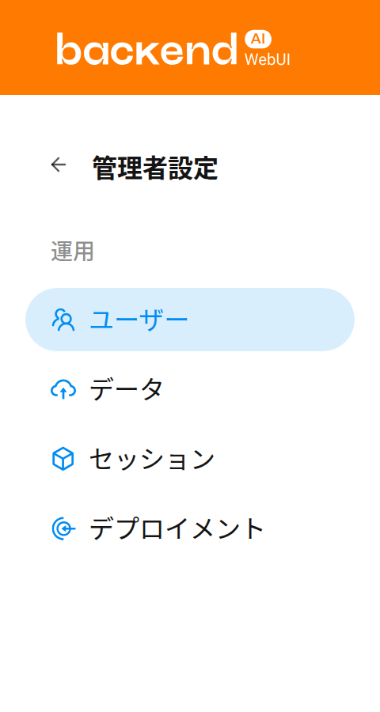
プロジェクト管理者ページでは、上部のプロジェクトセレクターで選択したプロジェクト配下の項目のみが表示されます。この内容はページ上部のバナーで確認できます。
プロジェクト管理者ページの更新#
プロジェクト管理者ページには同じ更新ボタンが用意されています。更新ボタンをクリックすると、テーブルの一覧を更新できます。
更新ボタンの横のドロップダウンボタンをクリックすると 自動更新 メニューが開き、自動更新の間隔を選択できます。
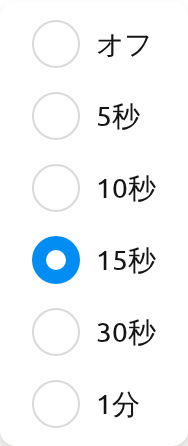
ユーザー#
ユーザー ページには、現在選択されているプロジェクトに所属するすべてのユーザーが表示されます。このページを使用して、プロジェクトのメンバーを一目で確認できます。例えば、プロジェクトのリソースにアクセスできるユーザーを確認したり、非アクティブなアカウントを特定したりできます。
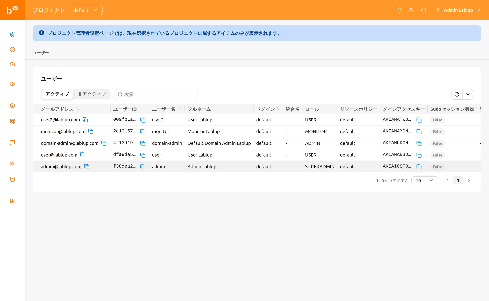
このページには以下のコントロールが用意されています:
- アクティブ / 非アクティブ セグメントコントロール: アクティブユーザーと非アクティブユーザーを切り替えます。デフォルトではアクティブが選択されています。
- プロパティフィルター: E-Mail、ID、ユーザー名、ロール、作成日時で一覧をフィルタリングします。
プロジェクト管理者にとって、ユーザーページは読み取り専用です。このページにはユーザーの作成、編集、無効化のアクションはなく、これらの操作はスーパー管理者のみが、管理者機能章で説明されているシステム全体のユーザーページから実行できます。
データ#
データ ページには、現在選択されているプロジェクトが所有するストレージフォルダ（vfolder）が表示されます。このページから、プロジェクト共有フォルダの作成、誤って削除されたフォルダの復元、保持の必要がなくなったフォルダの完全削除を行えます。
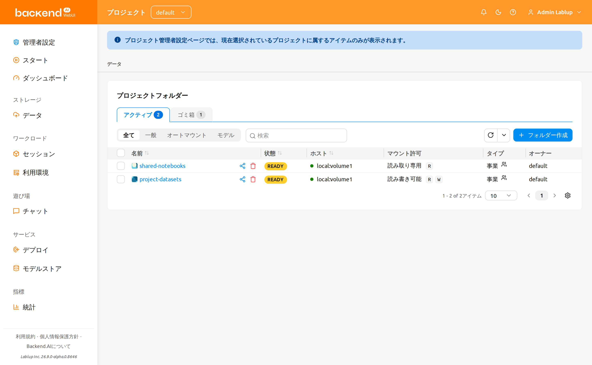
このページには以下のコントロールが用意されています:
アクティブ / ゴミ箱 タブ: 現在アクティブなフォルダとソフト削除されたフォルダを切り替えます。各タブには、含まれるフォルダ数を示す件数バッジが表示されます。
モードフィルター: フォルダの使用モードでフィルタリングします — 全て、一般、パイプラインフォルダ、オートマウント、モデル。
パイプラインフォルダ と モデル のオプションは、デプロイメントで対応する機能が有効になっている場合にのみ表示されます — パイプラインフォルダ には FastTrack パイプラインエンドポイント、モデル にはモデルフォルダが有効になっている必要があります。
プロパティフィルター: 標準のストレージフォルダプロパティフィルターを使用して一覧を絞り込みます。
フォルダの作成#
このページから新しいフォルダを作成するには:
- ページ右上の フォルダー作成 ボタンをクリックします。
- 作成モーダルでフォルダ情報を入力します。
- 作成 をクリックしてフォルダを作成します。
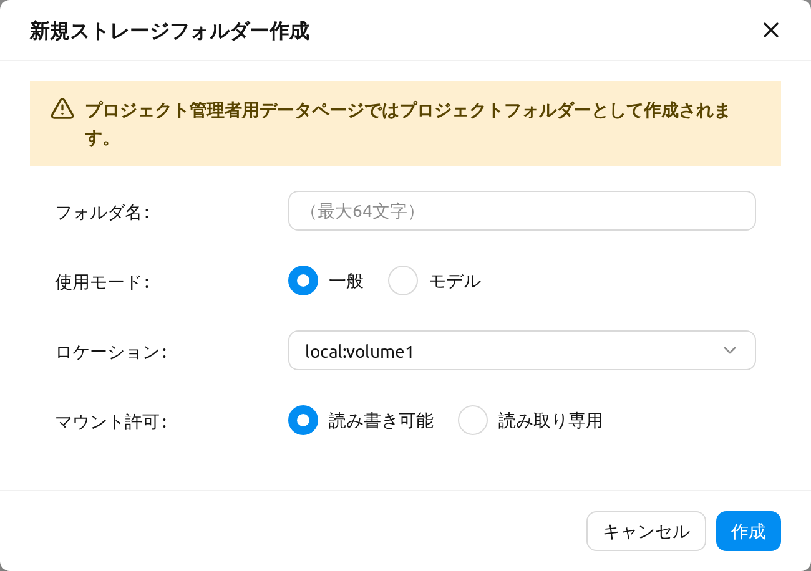
プロジェクト管理者用データページで作成したフォルダは、常にプロジェクトフォルダです。作成モーダルにはフォルダタイプを選択する項目がなく、これを明示する次のメッセージが表示されます:
プロジェクト管理者用データページではプロジェクトフォルダーとして作成されます。
フォルダの使用モード、権限、クォータの詳細については、ストレージフォルダ章を参照してください。
フォルダの復元または完全削除#
ゴミ箱 タブに切り替えると、ソフト削除されたフォルダを確認できます。行のチェックボックスで1つ以上のフォルダを選択し、選択件数の横に表示されるヘッダーのアクションボタンを使用します:
- 復元: 選択したフォルダをアクティブタブに戻します。
- 完全削除: 選択したフォルダを完全に削除します。この操作は取り消せず、確認のためにフォルダ名を入力する必要があります。
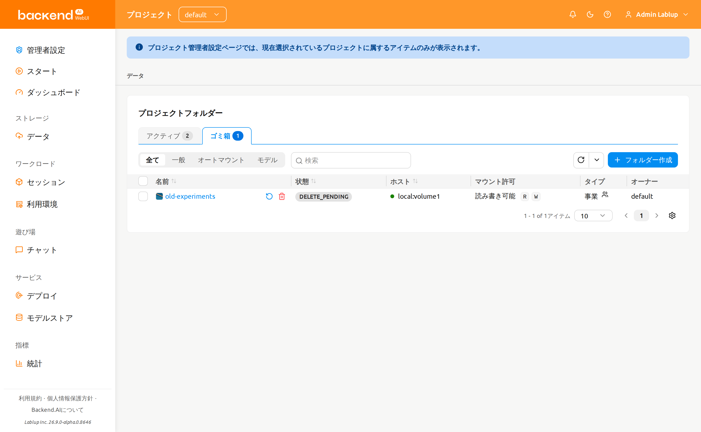
ストレージフォルダを完全削除すると、すべてのコンテンツが削除され、取り消すことはできません。確認モーダルでは、削除ボタンが有効になる前にフォルダ名を正確に入力する必要があります。
セッション#
セッション ページには、現在選択されているプロジェクトのユーザーが所有するコンピュートセッションが表示されます。このページから、アクティブなワークロードの監視、長時間実行されているセッションの特定、不要になったセッションの終了を行えます。
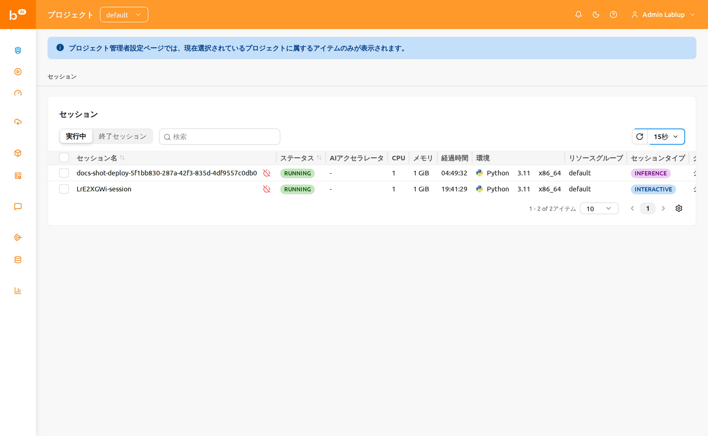
このページには以下のコントロールが用意されています:
- 実行中 / 終了済み セグメントコントロール: 現在実行中のセッションとすでに終了したセッションを切り替えます。
- プロパティフィルターと並べ替え: ID、セッション名、所有者UUIDで一覧をフィルタリングできます。並べ替え可能な列ヘッダーをクリックするとテーブルを並べ替えられます。
セッションの終了#
1つ以上のセッションを終了するには:
- 最も左側の列のチェックボックスを使用して、終了するセッションを選択します。単一のセッションを終了する場合は、セッション名の横にある 終了する ボタンを利用できます。
- テーブルヘッダーの電源オフアイコンをクリックして確認モーダルを開きます。
- モーダルに表示された対象セッションのリストを確認します。
- 必要に応じて 強制終了 チェックボックスを選択すると、現在のステータスに関係なくセッションを終了またはキャンセルできます。このオプションを有効にすると警告が表示され、確認ボタンのラベルが 終了する から 強制終了 に変わります。
- 確認ボタンをクリックしてセッションを終了します。
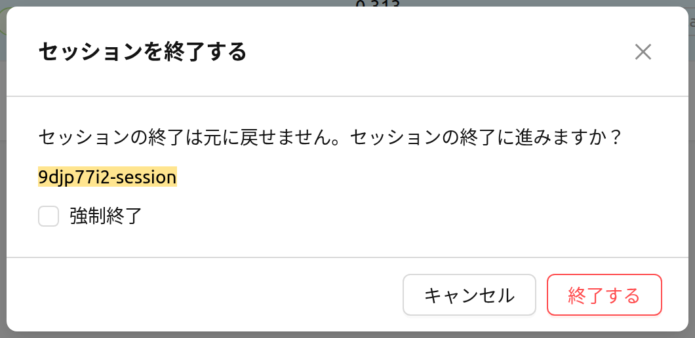
強制終了 は、セッションがハングして状態が不当に長時間変化しない場合にのみ使用してください。強制終了はエージェント上の実際のコンテナを削除しないため、その後に手動でのクリーンアップが必要になる場合があります。
プロジェクト管理者用のセッションページでは、現時点ではセッション名をクリックしてもセッションの詳細パネルは開きません。コンピュートセッションと詳細表示についての背景情報は、セッションページ章を参照してください。
デプロイメント#
デプロイメント ページには、現在選択されているプロジェクトが所有するモデルデプロイメントが表示されます。このページから、推論エンドポイントの管理、デプロイメント設定の編集、使用しなくなったデプロイメントの削除を行えます。
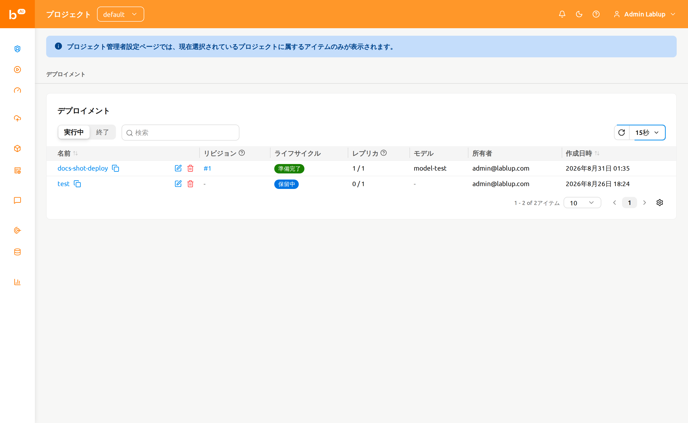
このページには以下のコントロールが用意されています:
- 実行中 / 終了済み セグメントコントロール: 現在実行中のデプロイメントと終了したデプロイメントを切り替えます。
- プロパティフィルター: 名前、タグ、エンドポイントURL、公開設定で一覧をフィルタリングします。
テーブルにはデプロイメントの名前、リビジョン、ライフサイクル、レプリカ、モデル、所有者、作成日時の各列に加え、必要に応じてドメイン、プロジェクト、リソースグループも表示されます。
リビジョン 列には、デプロイメントの現在のリビジョンがクリック可能な #N リンクとして表示されます。これをクリックすると、現在のリビジョンの詳細を表示するパネルが開きます。
デプロイメントの操作#
各デプロイメントの行では、以下のアクションが利用できます:
- デプロイメント名をクリックすると、プロジェクト管理者スコープ内のデプロイメント詳細ページに移動します。
- リビジョン番号（
#N）をクリックすると、現在のリビジョンの詳細パネルが開きます。 - 鉛筆アイコンをクリックすると、設定モーダルでデプロイメントの構成を編集できます。
- ゴミ箱アイコンをクリックすると、デプロイメントを削除できます。削除を実行するには、確認モーダルでデプロイメント名を入力する必要があります。
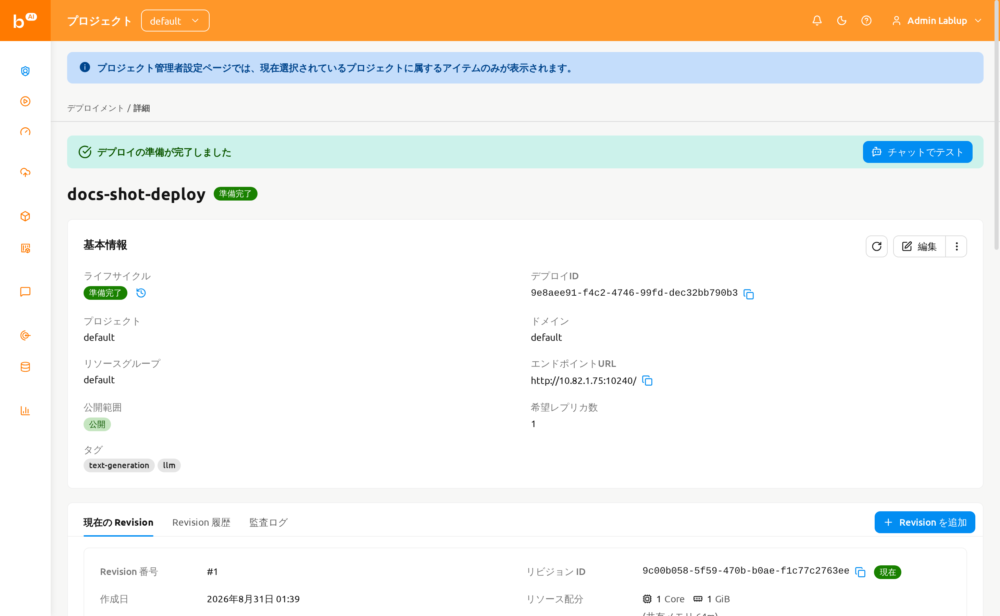
デプロイメントのリビジョン、レプリカ、トラフィックルーティングの詳細については、デプロイ章を参照してください。